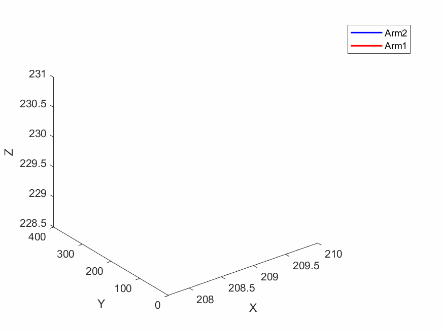

背景简介
近年来，混成系统广泛应用于许多安全攸关的领域中。为了保障系统在运行过程中的可靠性，需要通过混成自动机建模系统，并解决混成自动机上的最优控制生成问题。最优控制生成问题旨在确保系统安全性的同时，取得目标函数的最优值。在文章中，我们提出了一种基于路径和控制参数一体化编码的方法来解决组合系统中的最优控制生成问题。为了验证方法的有效性，我们通过将方法部署在一个汽车产线平台中，其俯瞰图如下图所示。

整个汽车车顶焊装生产线包括五个机械臂和多个传送带。首先，黄色框中的机械臂负责将无车顶的车身模型从架子上运送到传送带上。然后，传送带将车身模型向前传送，绿色框中的机械臂抓取车顶并精确地放置在车身上。接下来，传送到红色框中的机械臂前进行焊接，将车顶牢固地连接在车身上。接着，焊接好的车身传送到橙色方框中的检测摄像头下进行焊点检查，是否所有需要焊接的位置都被焊接完成，如果存在漏焊错焊的情况就需要返回焊接机械臂处重新焊接，直到所有位置都被焊接好。最后，经过焊接的车身通过焊点检查后，被送到蓝色框中的机械臂进行抛光，使所有焊点位置打磨光滑。
本网站中展示的实验包含：
- 我们将基于组件路径和控制参数一体化编码的多独立组件组合系统的最优控制生成方法部署在两个焊接机械臂组成的混成系统中，为两个机械臂生成最优补焊指令；
- 我们将基于共享标签序列求解与制导的组合系统最优控制生成方法部署在由一个焊接机械臂和一个传送带组成的混成系统中，为机械臂和传送带生成最优控制指令。
基于组件路径和控制参数一体化编码方法的实验效果展示
这一实验中，主要为两个焊接机械臂生成最优控制指令，场景设置如下图。

如果发生漏焊和错焊，需要重新退回焊接机械臂处进行焊接。通常情况下，所有机械臂的控制指令都是离线预先按照特定功能设计的。如果出现需要补焊的情况，工人们必须等待所有预设的控制指令完成后，才能进行手动设置补焊的相关指令，如果草率地单独控制两个焊接机械臂就会发生不安全的行为，造成机械臂损坏，如下表中"发生碰撞"的视频所示。
我们建立如下场景，其中机械臂1的焊接目标点在红点处，而机械臂2在蓝点处，要求生成两机械臂安全高效的焊接指令，基于组件路径和控制参数一体化编码方法通过建立上述场景的模型，并把生成的控制指令传入机械臂，成功安全高效地完成了补焊任务，具体控制效果在下表中“避免碰撞”一列内容。
| 发生碰撞 | 避免碰撞 | |
|---|---|---|
| 视频 | ||
| 动图 |  |
基于共享标签序列求解与制导方法的实验效果展示
这一实验中，主要为一个焊接机械臂和一个焊接机械臂下的传送带生成最优控制指令，场景设置如下图。

我们建立一个场景，其中机械臂的焊接目标点在红点处，传送带需要在机械臂焊接完之后将车身模型运输到焊点检测摄像头下，在生成控制指令时要求机械臂不能与车身发生碰撞，并且要尽可能高效地完成上述任务。然而，传送带的启动时间将会影响车身与机械臂末端的位置关系，当我们要求传送带在等待最激进的时间后启动，则可能会发生机械臂刚焊接完成还未复位时，传送带启动，导致车身与机械臂末端发生碰撞，如下表中“激进的场景”视频所示；而当我们要求传送带在等待最保守的时间后再启动，这样会发生机械臂焊接完成之后车身还未进行传送，尽管这样可以避免碰撞但是会使得整体效率降低，如下表中“保守的场景”视频所示。因此，我们尝试为该系统进行最优控制生成，既要保证机械臂安全完成补焊，又要使得传送带尽可能快启动以提高整体产线的效率。
基于组件路径和控制参数一体化编码方法通过建立上述场景的模型，并把生成的控制指令传入控制平台，得到下表中“安全的场景”的结果。
| 激进的场景 | 保守的场景 | 安全的场景 | |
|---|---|---|---|
| 视频 |